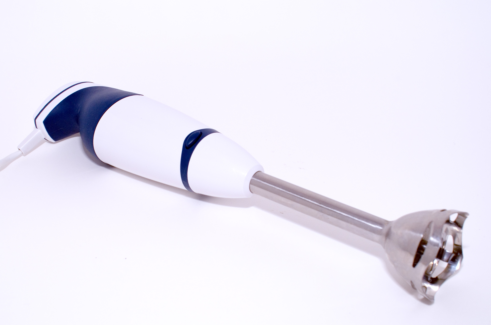
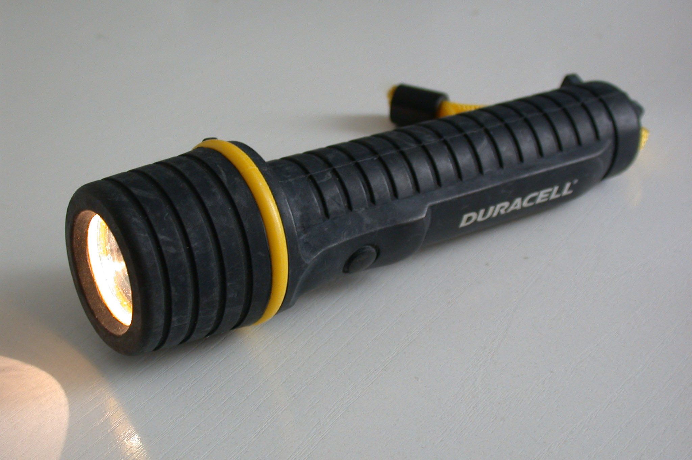
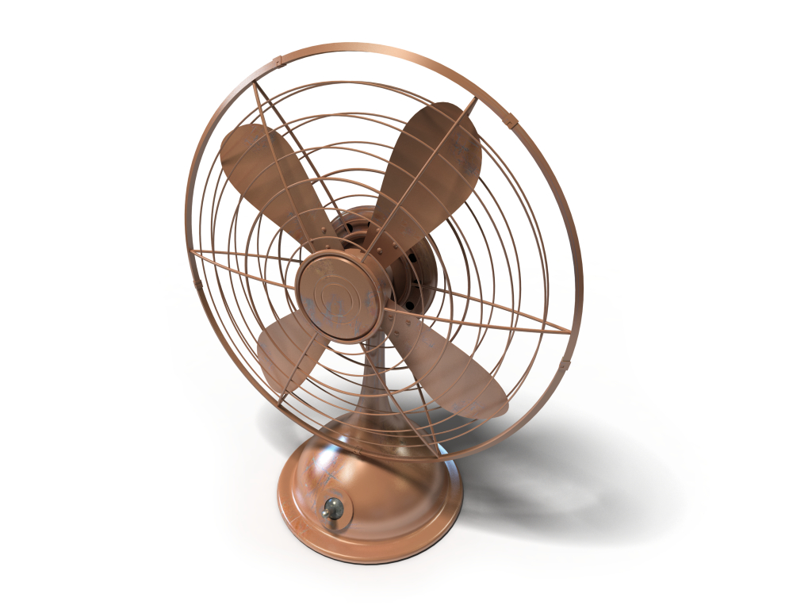
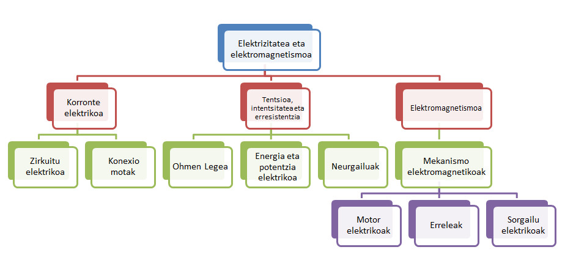

Nola dabiltza?
Jarraian dauden objektuak ezagunak dituzu, eta, beharbada, etxean izango dituzu. Ba al dakizu zelan dabiltzan objektu hauek?
  *Officeko irudien bankutik eta lNTEF-MECen irudien bankutik hartutako irudiak. (CC BY-NC-SA 3.0)
Adibidez, badakigu irabiagailua makina elektrikoa dela, makina horrek errotore bat duela eta errotore horrek, korronte elektrikoaren bidez, helize batean mugimendu birakaria eragiten duela.
HAUSNARTU:
Orain, galdera batzuei erantzutea proposatzen dizugu eta, horretarako, horien gainean hausnartu eta ikaskideekin komentatzea.
- Nola dabil esku-argia? Zein elementu dago esku-argi baten zirkuitu elektrikoan?
- Igogailu erraza egin beharko bazenu, zein elementu sartu beharko zenuke zirkuitu elektrikoan? Hausnar ezazu zirkuituan sortzen diren ekintza guztien eta horiek gertatzeko behar diren osagaien inguruan.
- Eskuetan baloi bat dugunean, lurrean hainbat bote egin ondoren, karranpa ematen dugu norbait ukitzean. Zergatik?
- Zein aparatu elektriko erabiltzen duzue egunero?
- Nola jakin dezakegu gure etxeko kontsumo elektrikoa zenbatekoa den?
IKASGELA BIRTUALA:
Sartu, talde gisa, klaseko ikasgela birtualean, eta gehitu post bat; bertan, egunero erabiltzen duzuen aparatu elektriko baten funtzionamendua azaldu. Saiatu zuon oharretan agertzen diren aparatu elektrikoak errepikatuta egon ez daitezen, eta erantsi azaltzen duzuen aparatuaren irudia.
EKIN LANARI!
BETE DIREN HELBURUAK
Kontzeptu-mapa
Hauek dira unitatean landuko ditugun kontzeptuak. Begiratu ea zein kontzeptu gogoratzen duzun, eta zein ez.
{kind=link}
Egin klik kontzeptu-mapa handitzeko
Ikertu - Webquest
"Jendea bizi duen arrakastagatik dugu gogoan, ez porrotagatik.”
“Jenioaren baitan, ehuneko bat inspirazioa da, eta ehuneko laurogeita hemeretzi, berriz, transpirazioa.”
Esaldi horiek Thomas Alva Edison asmatzaile ospetsuarenak dira, alegia bonbilla eta fonografoa, besteak beste, asmatu zituenarenak.
Zereginak:
- Ikertu Thomas Alva Edisonen biografia, eta diseinatu denbora-lerroa, Dipity-ren bidez, eta sartu, horretarako, ekarpen, asmakari edo patente esanguratsuenak.
- Denbora-lerroa osatzeko, erabili multimedia materiala, adibidez, haren asmakariak erakusten dituzten irudiak edo bideoak.
- Aztertu Thomas Edisonen beste aipu batzuk, eta aukeratu gogokoen duzuna, diseinatu duzun denbora-lerroari izena jartzeko.
- Azkenik, argitaratu zure denbora-lerroa ikasgelako blogean, eta partekatu ikaskideekin.